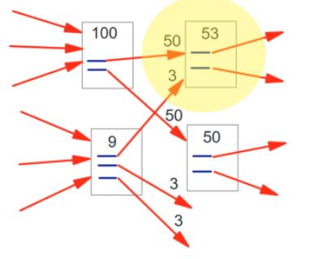

PageRank is an algorithm that determines how likely it is for a user to land on a page. This ranking is based on the number of links to the page.
We typically see this as a way to solve systems of equations. Gaussian Elimination will be used to reduce a matrix into row echelon form using three types of elementary row operations: switching two rows, multiplying a row by a nonzero number, and adding a multiple of a row to another.
A Markov Chain is a way of modeling states and the probability of switching between states. An important thing to note is that the node (or state) you came from doesn't factor in to this system; only your destination matters.

In the above example, the state can either switch (from A to B or B to A) or stay where it is (at A or B), leading to a total of 4 states.
PageRank is an example of a Markov Chain. Each page is a state, and the probabilities of a surfer landing on pages are the links between the states. These probabilities are used to calculate the each page's rank.
This algorithm starts by treating all pages equal: assigning all of the pages a probability of 1/N/ Then update the rank of each page by adding to it the weights of the pages linking to it divided by the number of links from that referring page. If a page has no outward links, we can redistribute its rank to other pages. This will continue until the ranks of all pages stabilize.
In the simplified web above, we see two arrows leading to the highlighted upper right page. The one labeled 50 comes from a 100 weighted page, but because it has two links coming out of it, this 100 is divided by 2 before being added. The arrow labeled 3 works similarly: it comes from the 9 weighted page with three links coming out of it. If we add these two additions 50 + 3, we get a weight of 53.

In the image above, we have pages that link to each other in a circular pattern. This is called a rank sink.
To show why this is an issue, let's assign the first page a rank of x. The first page will pass all of its rank to the second page, giving the second page a rank of x. The second page follows suit, passing its rank to the third page. Finally, the third page passes its rank of x back to the first page. However, the first page already has a rank, so we sum the new rank with the existing rank, giving us a rank of 2x. This process will repeat infinitely, giving each page infinite rank. That kinda breaks the algorithm.
Solution: Introduce a new value, called E. This value is the probability that a surfer will jump to a completely random page, since they will probably get bored of viewing the same pages in the rank sink over and over again. Use the E value in the calculation of the ranks.

In the image above, page D has no links pointing out of it. A link to a page like this is called a dangling link.
This poses an issue for the algorithm, since it is assumes that every page has at least one link going out of it.
Solution: Remove these pages from the calculations, calculate the rest of the ranks, add the pages back, and then recalculate the ranks.
PageRank is hard to break, since it is difficult to get other sites to link to yours. There is one great way to do this, however: paying for advertisements. This "exploit" of the algorithm has nothing to do with a vulnerability of the algorithm itself, though, meaning that PageRank is still relatively unbreakable.
Before Google, there were a couple other search engines.
First created to test PageRank, Google is now the most popular search engine.
The largest hard drives available at that time were 4GB, and after 40GB there was a small amount of money left. They ended up building the case out of LEGO blocks, plastic, and case fans.
You can learn about PageRank here.
Words that are spelled the same can have different meanings in different contexts.
For example, the word order can mean to make a request for something or to arrange something.
The more times your search query appears in any text on the page, the higher its rank will be.
How fast a page loads, how desktop/mobile friendly a page is, and how well it works in different browsers all factor into a page's rank.
Search results are influenced by previous searches.
Amine, Amrani. “PageRank Algorithm, Fully Explained.” Medium, 20 Dec. 2020, towardsdatascience.com/pagerank-algorithm-fully-explained-dc794184b4af.
Brin, Sergey, and Larry Page. The PageRank Citation Ranking: Bringing Order to the Web. 29 Jan. 1998, ilpubs.stanford.edu:8090/422/1/1999-66.pdf.
Google. “Google’s Search Algorithm and Ranking System - Google Search.” Google.com, 2018, www.google.com/search/howsearchworks/algorithms/.
MLInterview. “What Is the Page Rank Algorithm ?” Machine Learning Interviews, 26 Feb. 2019, machinelearninginterview.com/topics/machine-learning/what-is-page-rank-algorithm/#:~:text=Page%20rank%20algorithm%20is%20a%20tool%20to%20determine. Accessed 25 Apr. 2022.
NetworkX Guide. “PageRank Algorithm | NetworkX Guide.” Networkx.guide, networkx.guide/algorithms/link-analysis/pagerank/.
Powell, Victor, and Lewis Lehe. “Markov Chains Explained Visually.” Explained Visually, setosa.io/ev/markov-chains/.
Price, Dan. “7 Search Engines That Rocked before Google Even Existed.” MakeUseOf, 30 Nov. 2015, www.makeuseof.com/tag/7-search-engines-that-rocked-before-google-even-existed/.
Roberts, Eric. “The Google PageRank Algorithm”. 2016. Stanford University. Microsoft PowerPoint Presentation. https://web.stanford.edu/class/cs54n/handouts/24-GooglePageRankAlgorithm.pdf.
Sobek, Markus. “Google PageRank - Outbound Links.” Pr.efactory.de, 2002, pr.efactory.de/e-outbound-links.shtml.
Tanase, Raluca, and Remus Radu. “PageRank Algorithm - the Mathematics of Google Search.” Pi.math.cornell.edu, pi.math.cornell.edu/~mec/Winter2009/RalucaRemus/Lecture3/lecture3.html.